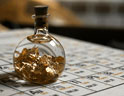

¿Qué es la alquimia? Algunas consideraciones e historia

La palabra alquimia viene del árabe y quiere decir echar juntos, lo que se
vierte, lo que se mezcla. También se le ha dado el significado de
transformación, la cual se realiza desde lo material con energías
inmateriales para luego mostrar los efectos del cambio nuevamente en lo
material. Por ejemplo, el preparado de un perfume armonizador de un
ambiente se hace en el plano material, se arroja y expande y étericamente
la energía del lugar se transforma dando manifestaciones en el plano físico
de armonía.
La alquimia así como la magia al trabajar en planos invisibles no muestran
concretamente el proceso de transformación pero si los resultados. Entonces
desde la antigüedad se considero a los magos y alquimistas como chantas y
charlatanes que pasaban los días encerrados en sus laboratorios sin querer
trabajar como trabajaban los demás del pueblo. Decían que ellos pasaban sus
vidas haciendo remedios milagrosos, pociones, preparados, venenos y sobre
todo que intentaban convertir el plomo en oro, para enriquecerse.
Los alquimistas desarrollaban la ciencia alquímica trabajando básicamente
con los elementos de los distintos reinos de la naturaleza, o sea , Agua,
Aire, Fuego, Tierra los que eran usados para dar nacimiento al quinto
elemento producto de la mezcla de los mismos, el cual gozaba de un
potencial que acumulaba a los cuatro más una vibración más. El quinto
elemento es la exaltación de la potencia de los cuatro elementos naturales.
El camino de un alquimista comenzaba por un aprendizaje profundo acerca de
cada especie y elemento de la naturaleza, lo que le llevaba años de
experimentos y ...
búsquedas. Alcanzar el grado de alquimista era una tarea
ardua de mucho estudio y dedicación, además de ser un camino muy ermitaño.
En el reino mineral necesitaban hacer al menos una transformación de un
metal vulgar a uno noble como la plata, el oro o el platino. En el reino
animal y vegetal la creación de un remedio que curara las enfermedades y
prolongara la vida. Utilizando los cuatro elementos en cada proceso de
transmutación o alquimia. La alquimia no solamente se trata del plano
físico material sino también de los planos del alma.
Los alquimistas sostenían que todos los máximos conocimientos estaban
contenidos en lo que llamaban la Piedra filosofal. Mucho se ha hablado de
esta Piedra Filosofal, algunos seres creen que es una piedra realmente y
que tiene grabadas formulas de vida eterna o la fórmula para transformar
todo en el metal oro. Pero también hay seres que sostienen que la piedra
está en nuestro interior y que se llega a su sabiduría a través de la
introspección y la meditación.
Los alquimistas unieron lo físico y lo metafísico, se puede ver en tratados
alquímicos términos astrológicos, cabalísticos, esotéricos unificados a
términos químicos.
Llegando a la edad media los alquimistas utilizaron aún más los aspectos
metafísicos como cimientos de la alquimia sin dejar de utilizar
denominaciones químicas pero usándolas en menor cantidad. De este modo la
transformación de metales comunes en oro como la evolución universal,
simbolizaban el tránsito desde aquello en estado enfermo e imperfecto hacia
un estado de salud, de eternidad y de mayor perfección. Dentro de los
conocimientos alquímicos está muy compenetrada la astrología ya que a cada
planeta le corresponde un metal y los cuerpos celestes del sistema solar
ejercen influencias en la Tierra y sus elementos y reinos.
Algunos alquimistas que se destacaron en el mundo: Hermes Trimegisto, Isaac
Newton, Roger Bacón, Santo Tomas de Aquino, Tycho Brahe, Thomas Browne,
Ramón Jul, estos son solo algunos de los más conocidos pero esta ciencia
realmente como mencionamos antes era de seres sumamente ermitaños, y es por
eso que se desconocen la mayoría de los nombres de los mismos.
Las logias como la llamada Rosa Cruz, o la Masona, contaban con alquimistas
de grandes conocimientos y que sabían no solamente de química sino de
astrología, cábala, filosofía, psicología, sociología, todas herramientas
que permitían lograr una sabiduría más profunda y concreta. La alquimia fue
utilizada por todos los pueblos antiguos que poblaron la Tierra.
La alquimia Oriental y la Occidental
Si observamos a través de la historia podemos encontrar la alquimia en
distintas tradiciones filosóficas que se desarrollaron en milenios y en
todos los continentes. Se pueden diferenciar dos tendencias la China se
desarrollo en la zona oriental y esta alquimia estaba asociada directamente
al taoísmo. La Occidental tránsito por Egipto, Grecia y Roma, algunas zonas
de Europa, esta alquimia no está muy relacionada con las religiones de
occidente.
En Egipto la alquimia reunía el trabajo con metales, medicina, magia y
religión, sobre todo en la clase sacerdotal, se dice que Keops era
alquimista y que desarrollo tratados de alquimia. Se dice que los
alquimistas egipcios fueron los creadores del mortero, utensilio que se
utiliza para hacer preparados alquímicos. Se sabe que los egipcios
producían sus maquillajes, los colorantes para sus telas, y aceites
esenciales que usaban para aromatizar calentándolos con velas.
Se le atribuye al Dios Thot llamado también Hermes Trimegisto la creación
de la ciencia de la alquimia. La escuela de sacerdotisas que tenía Hermes
entrenaba a las mujeres en el arte de la alquimia sexual por eso su símbolo
es la serpiente caduceando o sea la elevación de la kundalini. Hermes
Trimegisto escribió las leyes universales, llamada Tabla Esmeralda.
Los griegos se basaron en los conocimientos alquímicos egipcios y le
agregaron la matemática y la geometría sagrada. Además algo importante a
destacar fueron los griegos los que concibieron que el universo estaba
formado solo por cuatro elementos, tierra, agua, aire y fuego.
Los romanos adoptaron los conocimientos griegos no solamente la alquimia
sino también la metafísica, y la filosofía. Pero también en roma como en
otras civilizaciones a la alquimia se le dio un uso hermético y solo
algunos seres podían llegar a utilizar esta ciencia.
La alquimia occidental fue muy amplia en el ámbito de la materia y lo
espiritual, la alquimia china se desarrolló más en el área de la salud. La
alquimia china desarrolló la acupuntura, la moxibustión que es la
combustión de hierbas como la artemisa que ayuda en la sanación de
contracturas. También en el área del cuerpo físico la alquimia a través de
las artes marciales como el Kung Fu y el Tai Chi Chuan.
En India también la alquimia fue mucho hacia el cuerpo ya que buscaban el
néctar de la vida sana. Y a través de llevar esa vida sana poder lograr la
liberación del cuerpo, la elevación, la iluminación. También los hindúes
como los egipcios hacían aceites esenciales que usaban para masajes
ayurvédicos. La alquimia hindú también habla de transmutación sexual a
través de las técnicas del tantra.
En este bendito planeta hemos rotulado mucho todas las cosas lo importante
es darnos cuenta que todo proviene de la unicidad y está buscando el camino
de retorno hacia esa unicidad. No es tan importante saber quién fue el
primer alquimista como aplicar los conocimientos alquimistas en las
transmutaciones que necesitamos hacer y hacerlas, para vivir en un planeta
más armonioso y equilibrado con los reinos de la naturaleza. Los seres
humanos alquimistas por naturaleza siempre buscaron las bases fundamentales
de su existencia y las claves para la juventud eterna. La piedra filosofal
mora dentro de cada ser.
La alquimia es un puente con un origen y un punto de llegada que en
realidad es el mismo lo importante es el tránsito el puente es el camino la
alquimia es el camino.